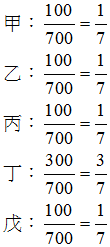

主題精選：土地法第34條之1¶
共收錄 14 篇文章。
1. 土地法第34條之1應用於公同共有之舉例¶
發布日期: 2025-10-09
內文¶
土地法第34條之1第5項規定，公同共有準用土地法之第34條之1第1項（多數決）及第4項（優先購買權）。茲舉一例說明：
甲死亡，遺留一筆土地，由乙、丙、丁三人繼承，應繼分分別為四分之三、六分之一、十二分之一。乙急需現金，但不得單獨出售其應繼分，故擬運用土地法第34條之1第1項，將該筆土地全部出售於戊。其程序如下：
• (一) 乙依據土地登記規則第120條、遺產及贈與稅法第41條之1之規定，先繳清全部遺產稅，並辦理公同共有繼承登記。
• (二) 乙依據民法第759條及土地法第34條之1第1項之規定，出售該筆土地全部予戊。
• (三) 乙依據土地法第34條之1第4項規定，通知丙及丁是否主張優先購買。
• (四) 設丙、丁二人皆願意以同樣條件優先購買。
• (五) 依據民法第830條第1項規定，公同共有物之關係因公同共有物之讓與而消滅。準此，本例由公同共有轉變為分別共有。
• (六) 依據土地法第三十四條之一執行要點第13點第10款規定，公同共有人數人主張時，其優先購買權之範圍應按各主張優先購買權人之潛在應有部分（即應繼分）比例計算之。
• (七) 最後，該筆土地產權為丙、丁二人分別共有，應有部分丙為三分之二，丁為三分之一。
注：本文圖片存放於 ./images/ 目錄下
2. 個人墓地出售是否得主張優先購買之疑義¶
發布日期: 2025-03-18
內文¶
本週專欄為土地法第34條之1第4項有關共有人出賣應有部分之特殊概念－個人墓地出售是否得主張優先購買。可參臺灣高等法院暨所屬法院110年法律座談會民事類提案第7號內容：
甲以經營殯葬事務為業，將其所有之A土地（土地謄本所載使用地類別為殯葬用地）規劃為編號1至26,000位之個人墓園用地擬以出售。嗣乙向甲購買編號50之個人墓園用地，甲則移轉登記A土地之應有部分兩萬六千分之一予乙，又丙為乙之債權人，於清償期屆至後，乙無力還款，丙遂持執行名義向法院聲請強制執行上開乙於A土地之應有部分，經拍定後A土地之其他個人墓園用地所有人（高達千人）得否以共有人之身分行使優先承買權？
討論意見：甲說：肯定說。 按土地法第34條之1第4項規定：「共有人出賣其應有部分時，他共有人得以同一價格共同或單獨優先承購。」其立法意旨無非為第三人買受共有人之應有部分時，承認其他共有人享有優先承購權，簡化共有關係（最高法院 72 年台抗字第94號判例意旨參照）。又共有物分管之約定，不以訂立書面為要件，倘共有人間實際上劃定使用範圍，對各自占有管領之部分，長年互相容忍，對於他共有人使用、收益，各自占有之土地，未予干涉，即非不得認有默示分管契約之存在（最高法院83年度台上字第1377號判決意旨參照）。復共有之土地縱已達成分管之約定，於該分管之共有人出售該土地應有部分，亦無排斥賦予共有人優先承買土地之權利，若認土地共有人間業已成立分管契約，而於他共有人出賣其應有部分時，其他共有人即不得主張共有人之優先承買權，顯失簡化共有關係之目的，無助於促進土地之利用（臺灣高等法院100年度上字第 1189 號判決意旨參照）。查題示A土地之共有人得於其使用個人墓園之範圍內排除他人干涉，並對各自占用管領之部分，長年互相容忍，堪認共有人間係成立默示分管契約。準此，揆諸前開實務見解，縱認A土地已達成分管之約定，仍不得限制共有人優先承買之權利，執行法院拍賣A土地之應有部分，仍應通知其他 A土地共有人行使優先承買權。
乙說：否定說（最終採此說）。 按土地法第34條之1第4項優先承購權之立法目的，固在減少共有人人數，簡化土地之利用關係，並可解決共有不動產之糾紛，促進土地利用，便利地籍管理及稅捐課徵等，惟本件殯葬經營業者係將殯葬用地劃分成特定占用位置的個人墓園，再以應有部分的方式出賣，其目的無非係欲使多數買受人得以利用，故非有賦予其他共有人優先承買權以簡化土地關係之必要，且若維持共有關係，亦符合當初規劃及實際利用狀態，對於共有物之管理、收益並無妨礙。再事實上於此類情形，共有人之人數動輒數千人，不但送達不易，耗費郵資過鉅，況該殯葬用地之個人墓園倘已使用，其餘共有人往往缺乏應買意願，徒為增加國家財政負擔並延長執行時程，對於債權人及債務人均有所不利。
初步研討結果：採乙說。 審查意見：採乙說。 研討結果： （一）乙說理由倒數第6行末「況該殯葬用地之個人墓園倘已使用，其餘共有人往往缺乏應買意願，」等字刪除。 （二）照修正後之乙說通過。
提醒： 雖法律座談會並不具約束法院判決效力，但可供作參考。其結論即這種個人墓地出售土地應有部分無優先購買權適用，理由有三：
-
目的面：無簡化消滅共有關係之必要。
-
權益面：維持共有關係，並不妨礙共有物之使用管理。
-
執行面：此情形如需優先購買權通知，徒增時間與金錢，反而影響相關權益。
資料來源：臺灣高等法院暨所屬法院110年法律座談會民事類提案第7號
注：本文圖片存放於 ./images/ 目錄下
3. 共有土地分管下之優先購買權¶
發布日期: 2025-02-27
內文¶
甲、乙、丙三人共有一筆土地，應有部分相等，甲、乙、丙三人訂立分管契約，分管之特定位置分別為該筆土地之A、B、C部分。今，甲將其分管之特定位置A設定地上權予丁，丁並於其上興建房屋一棟；乙將其分管之特定位置B出租予戊，戊並於其上興建房屋一棟；丙自行使用其分管特定位置C。
• (一) 甲出售其應有部分三分之一，何人有優先購買權？
-
丁依據土地法第104條規定，得主張優先購買權。
-
乙、丙二人依據土地法第34條之1第4項規定，得主張優先購買權。
-
土地法第104條之優先購買權具有物權效力，土地法第34條之1第4項之優先購買權僅具債權效力，因此丁之優先購買權先於乙、丙二人之優先購買權而行使。
-
戊無優先購買權。因為戊與甲之間無地上權、典權或租賃權關係存在。
• (二) 戊出售其房屋時，何人有優先購買權？
-
乙依據土地法第104條規定，得主張優先購買權。
-
甲、丙二人無優先購買權。因為甲、丙二人與戊之間無地上權、典權或租賃權關係存在。
• (三) 甲、乙二人運用土地法第34條之1第1項規定，將該筆土地全部出售時，何人有優先購買權？
-
丁基於土地法第104條規定之「同樣條件」，得就該筆土地全部主張優先購買權。
-
戊基於土地法第104條規定之「同樣條件」，得就該筆土地全部主張優先購買權。
-
丙依據土地法第34條之1第4項規定，得就該筆土地全部主張優先購買權。
-
土地法第104條之優先購買權具有物權效力，土地法第34條之1第4項之優先購買權僅具債權效力，因此，丁、戊二人之優先購買權先於丙而行使。
-
丁、戊二人之優先購買權皆具有物權效力，依登記（指地上權）或成立（指租賃權）先後定其行使之優先順序。
注：本文圖片存放於 ./images/ 目錄下
4. 土地法第34條之1於公同共有準用之¶
發布日期: 2024-11-14
內文¶
公同共有不動產得準用土地法第34條之1第1項（多數決）及第4項（優先購買權）。茲說明如下：
• (一) 各公同共有人不得單獨出賣其潛在應有部分。惟部分公同共有人得依土地法第34條之1第1項規定出賣公同共有土地或建物全部。
• (二) 共有人數及應有部分之計算，於公同共有土地或建物者，指共有人數及其潛在應有部分合計均過半數。但潛在應有部分合計逾三分之二者，其共有人數不予計算（執§7 II）。
• (三) 他公同共有人得就該公同共有土地或建物主張優先購買權。如有數人主張時，其優先購買權之範圍應按各主張優先購買權人之潛在應有部分比例計算之（執§13⑩）。
• (四) 民法第830條第1項規定，公同共有之關係，因公同共有物之讓與而消滅。準此，數人主張優先購買後，該土地或建物之產權由公同共有關係轉變為分別共有關係。
例如：甲、乙、丙、丁、戊五人因繼承而公同共有一筆土地，應繼分各五分之一。甲、乙、丙三人依土地法第34條之1第1項將該筆土地出賣於庚，不同意共有人丁、戊二人主張優先購買權。優先購買後，該筆土地產權為丁、戊二人共有，應有部分各二分之一。
【附註】 執：土地法第三十四條之一執行要點
注：本文圖片存放於 ./images/ 目錄下
5. 土地法第34條之1之通知¶
發布日期: 2022-09-08
內文¶
共有人依土地法第34條之1規定出售共有不動產時，應於訂定買賣契約之前，以書面通知他共有人；其目的在使他共有人知悉出售事宜，俾他共有人心理有所準備。嗣於訂定買賣契約之後，應再次以書面通知不同意共有人；其目的在使不同意共有人知悉買賣契約之內容，以決定是否行使優先購買權。
土地法第34條之1第2項規定：「共有人依前項規定為處分、變更或設定負擔時，應事先以書面通知他共有人；其不能以書面通知者，應公告之。」所稱事先，應指訂定契約之前，故屬於上開第一次通知。
總之，第一次通知應於訂定契約之前，第二次通知應於訂定契約之後。況第一次通知與第二次通知之目的不同，因此不可合併為一次通知，然，現行實務卻合併為一次通知，違反土地法第34條之1第2項規定。¶
注：本文圖片存放於 ./images/ 目錄下
6. 土地法第34條之1之修法方向¶
發布日期: 2022-07-14
內文¶
◎試擬土地法第34條之1之修法方向，以保障不同意共有人之權益？
【解答】
土地法第34條之1共有土地或建築改良物之處分、變更及設定地上權、農育權、不動產役權或典權，採多數決行之，然對於少數不同意共有人之保障仍嫌不足。因此，如何保障不同意共有人之權益，乃土地法第34條之1之未來修法重點。茲擬訂修法方向如下：
• (一) 處分僅限於買賣：土地法第34條之1所稱處分，限縮在買賣（包括標售、拍賣等）。因為買賣，不同意共有人尚有優先購買權，以為制衡。如果不是買賣，不同意共有人將無優先購買權，喪失制衡手段。
• (二) 提高多數決同意門檻：現行同意門檻為以共有人過半數及其應有部分合計過半數，或應有部分合計逾三分之二，人數不予計算。修法之同意門檻宜提高為共有人逾三分之二及其應有部分合計逾三分之二，或應有部分合計逾四分之三，人數不予計算。
• (三) 設定用益物權適用優先權機制：現行僅買賣，不同意共有人有優先購買權；至於設定地上權、農育權、不動產役權或典權，不同意共有人並無優先承受權。為避免共有人以多數決低價設定地上權、農育權、不動產役權或典權予自己人，應賦予不同意共有人優先承受權，以為制衡。
• (四) 增訂共有人之損害賠償責任：同意之共有人以多數決為處分、變更及設定地上權、農育權、不動產役權或典權，如有故意或重大過失，致共有人受損害者，對不同意之共有人連帶負賠償責任。¶
注：本文圖片存放於 ./images/ 目錄下
7. 共有不動產多數決之目的¶
發布日期: 2021-10-21
內文¶
各位同學好
今日專欄談土地法第34條之1第1項有關共有不動產多數決之目的，茲說明如下：
• 一、條文規範首先，依據土地法第34條之1第1項，「共有土地或建築改良物，其處分、變更及設定地上權、農育權、不動產役權或典權，應以共有人過半數及其應有部分合計過半數之同意行之。但其應有部分合計逾三分之二者，其人數不予計算。」，主要在規範多數決之行使，與同條第4項共有人應有部分出售，他共有人之優先購買權之規範目的有所不同。
• 二、目的多數決之目的係便利不動產所有權之交易，解決共有不動產之糾紛，促進共有物之有效利用，增進公共利益(釋字第562號)。避免土地這樣的稀有資源在不利的產權結構下，無法透過交易而發揮最大的資源效益(蘇永欽)。
• 三、土地法第34條之1第1項，有無簡化或消滅共有關係的規範意旨?按該條係去除「目前多數共有人認為其無法妥適利用共有不動產」的弊端，而共有人依多數決出賣共有不動產全部時，並不論買受人為一人或數人，因此，該條項似無簡化或消滅共有關係的立法意旨。如認為該條項的目的在於簡化或消滅共有關係，反而可能會減少共有不動產出賣的可能性。(黃健彰、陳立夫)¶
注：本文圖片存放於 ./images/ 目錄下
8. 共有土地之分割與合併（下）¶
發布日期: 2021-01-21
內文¶
• (三) 土地法第34條之1多數決：
-
共有土地分割：茲分標示分割與權利分割分別說明：
-
標示分割：標示分割屬於土地法第34條之1第1項所稱「變更」，故標示分割得適用土地法第34條之1多數決。
-
權利分割：權利分割雖屬處分行為，惟多數人代理少數人決定分割後所分配之土地位置，難謂公平合理；況共有土地無法協議分割，尚得聲請法院裁判分割。因此，權利分割不得適用土地法第34條之1多數決。
-
共有土地合併：土地法第三十四條之一執行要點第5點第1項規定：「共有土地或建物標示之分割、合併、界址調整及調整地形，有本法條之適用。」準此，共有土地之合併得適用土地法第34條之1多數決
二宗以上所有權人不相同之共有土地或建物，依土地法第34條之1規定申請合併，應由各宗土地或建物之共有人分別依土地法第34條之1規定辦理（土地法第三十四條之一執行要點第5點第2項）。又，申請合併之共有土地地價不一者，合併後各共有人之權利範圍，應以合併前各共有人所有土地之地價與各宗土地總地價之和之比計算，並不得影響原設定之他項權利（土地法第三十四條之一執行要點第8點第7款）。如甲、乙、丙三人共有一筆A地，應有部分各三分之一，A地公告土地現值300萬元，丁、戊二人共有一筆B地，丁之應有部分四分之三，戊之應有部分四分之一，B地公告土地現值400萬元。今擬將A地與B地合併為一筆C地，甲、乙、丁三人同意，丙、戊二人反對，則A地之同意共有人數超過二分之一，應有部分超過二分之一，符合土地法第34條之1第1項多數決門檻；B地之同意共有人應有部分超過三分之二，人數不計算，亦符合土地法第34條之1第1項多數決門檻。因此，A地與B地之合併得適用土地法第34條之1多數決。合併後之C地應有部分如下：[圖片1]
上例之合併，依土地稅法施行細則第42條第4項規定，不徵土地增值稅。總之，共有土地合併，不論標示合併或權利合併，皆得適用土地法第34條之1多數決。惟合併後各共有人之權利範圍，應以合併前各共有人所有土地之地價與各宗土地總地價之和之比計算。
文章圖片¶

9. 多數決與優先購買權之比較¶
發布日期: 2019-08-08
內文¶
各位同學好
今日專欄主要釐清有關土地法第34條之1之概念。
有滿多同學常把34-1就認定為多數決，但在寫立法目的時，卻又寫簡化消滅共有關係，實際上，第1項多數決與第4項優先購買是兩回事，觀念整理比較如下：
• T. ABLE_PLACEHOLDER_1
綜上，應注意多數決處分應無簡化、消滅共有關係之意旨。
按該條係去除「目前多數共有人認為其無法妥適利用共有不動產」的弊端，而共有人依多數決出賣共有不動產全部時，並不論買受人為一人或數人，因此，該條項應無簡化或消滅共有關係的立法意旨。如認為該條項的目的在於簡化或消滅共有關係，反而可能會減少共有不動產出賣的可能性。(參黃健彰、陳立夫老師文章)¶
注：本文圖片存放於 ./images/ 目錄下
10. 土地法第三十四條之一執行要點之修正重點(三)¶
發布日期: 2018-05-03
內文¶
土地法第三十四條之一執行要點於民國106年12月1日修正發布，修正前之第10點第2款規定：「徵求他共有人是否優先承購之手續，準用土地法第一百零四條第二項規定，即他共有人於接到出賣通知後十日內不表示者，其優先購買權視為放棄。他共有人以書面為優先購買與否之表示者，以該表示之通知達到同意處分之共有人時發生效力。」修正後之第11點第1款規定：「他共有人於接到出賣通知後十五日內不表示者，其優先購買權視為放棄。他共有人以書面為優先購買與否之表示者，以該表示之通知達到同意處分之共有人時發生效力。」兩者不同在優先購買權人接到出賣通知後之回覆期限，修正前為10日，修正後為15日。其變更理由如下：
• (一) 為加強維護優先購買權人之權益，拉長回覆期限。
• (二) 回覆期限原參照土地法第104條第2項，改參照民法物權編施行法第8條之5第7項。前者法條較舊，後者法條較新。
【補充】
• T. ABLE_PLACEHOLDER_1¶
注：本文圖片存放於 ./images/ 目錄下
11. 土地法第三十四條之一執行要點之修正重點(二)¶
發布日期: 2018-04-26
內文¶
土地法第三十四條之一執行要點於民國106年12月1日修正發布，修正前之第10點第1款規定：「部分共有人依本法條規定出賣共有土地或建物，就該共有人而言，仍為出賣其應有部分，對於他共有人之應有部分，僅有權代為處分，並非剝奪他共有人之優先承購權，故應在程序上先就其應有部分通知他共有人是否願意優先購買。」修正後之第10點規定：「部分共有人依本法條第一項規定出賣共有土地或建物時，他共有人得以出賣之同一條件共同或單獨優先購買。」兩者不同在修正前之優先購買權的客體為同意共有人之應有部分，修正後之優先購買權的客體為共有物全部。
部分共有人依土地法第34條之1第1項出賣共有土地全部時，不同意共有人得依該條第4項對共有土地全部主張優先購買權，而非僅對同意共有人之應有部分有優先購買權。其理由如下：
• (一) 土地法第34條之1第4項所稱同一價格，係指同一條件。因此，部分共有人依土地法第34條之1第1項出售共有土地全部時，應就該全部土地之同一條件通知不同意共有人是否主張優先購買權。
• (二) 部分共有人依土地法第34條之1第1項出售共有土地全部時，就該共有人個體而言，仍為出售其應有部分，對於不同意共有人之應有部分，僅有權代為處分，因此有土地法第34條之1第4項優先購買權之適用。又，各共有人應有部份之總和等於共有土地全部，故不同意之共有人對共有土地全部有優先購買權。¶
注：本文圖片存放於 ./images/ 目錄下
12. 土地法第三十四條之一執行要點之修正重點(一)¶
發布日期: 2018-04-19
內文¶
土地法第三十四條之一執行要點於民國106年12月1日修正發布，其中第3點，修正前之條文：「本法條第一項所稱處分，指法律上及事實上之處分。但不包括贈與等無償之處分、信託行為及共有物分割。」修正後之條文：「本法條第一項所定處分，以有償讓與為限，不包括信託行為及共有物分割；所定變更，以有償或不影響不同意共有人之利益為限；所定設定地上權、農育權、不動產役權或典權，以有償為限。」修正前後差異甚大。
土地法第34條之1第1項所定之處分、變更及設定地上權、農育權、不動產役權或典權，為顧及少數不同意共有人之權益，適用範圍應予限縮。茲分析如下：
• (一) 處分：
-
處分，限於有償讓與；亦即，以有對待利益之法律行為（如買賣、交換、合併等）為限。
-
處分，不包括無償性之處分（如贈與、拋棄等）及事實上之處分（如共有土地興建房屋、共有建物拆除等）。前者，不同意共有人喪失不動產而未得到補償，影響其利益甚鉅；後者，造成標的物性質之變更、改造或毀損，且常以無償為之，不同意共有人未受合理保障。
-
處分，不包括信託行為及共有物分割。前者，須具有強烈信賴關係為基礎，故須全體委託人同意，始足當之；況土地法第34條之1所定處分係於信託法公布施行前所作規定，故當時之處分未包括信託行為在內。後者，所稱共有物分割，指權利分割，分割方式恐造成不同意共有人之利益受損；況協議分割不成，尚有裁判分割以滋解決，不致妨礙共有物之利用。
• (二) 變更：所稱變更，如共有土地或建物標示之分割、合併、界址調整、調整地形等；並以有償或不影響不同意共有人之利益為限。
• (三) 設定地上權、農育權、不動產役權或典權：
-
現行他項權利共七種，其中永佃權、耕作權及抵押權之設定不得適用土地法第34條之1第1項。其理由如下：
-
永佃權：永佃權以民國99年8月2日前發生者為限，故民國99年8月3日後無新設定之永佃權。
-
耕作權：耕作權成立於土地法第133條之公有荒地招墾及山坡地保育利用條例第37條之山坡地範圍內山地保留地輔導原住民開發，故無共有土地情形。
-
抵押權：抵押權為擔保物權，不以占有為要件，故無須以多數決促進共有不動產利用；況共有人得單獨將其持分不動產設定抵押權，權利行使應無問題。
-
設定地上權、農育權、不動產役權或典權等四種用益物權，以有償為限，以保護不同意共有人之利益。
-
地上權、農育權及不動產役權皆不以支付地租為要件，故有償行為或無償行為皆可成立地上權、農育權或不動產役權。惟適用土地法第34條之1第1項僅限於有償行為。
2. 典權必須支付典價，始可成立，故典權必定為有償行為。典權適用土地法第34條之1第1項應無疑義。¶
注：本文圖片存放於 ./images/ 目錄下
13. 土地法第34條之1實例研習¶
發布日期: 2018-03-08
內文¶
甲、乙、丙三人共有一筆土地，每人持分相等。僅甲、乙二人同意遂將該土地依土地法第34條之1出售於A、B、C、D四人共有，試問此處分是否可行？又，甲、乙、丙三人全體同意將該土地出售於A、B、C、D四人共有，試問此處分是否可行？
【解答】
• (一) 該土地原為三人共有，依土地法第34條之1規定出售於四人共有。共有人數未減少，反而增加，違反土地法第34條之1之立法意旨(即減少共有人數)，故其處分不可行。
• (二) 該土地原為三人共有，經全體共有人同意而非依土地法第34條之1規定，將該土地出售於四人共有，因此不受土地法第34條之1之立法意旨的拘束，故其處分可行。
好書報報～許文昌主編土地法規(小法典)第七版新鮮問世！
土地法規屬於經濟社會立法。由於經濟社會變動快速，土地法規因而變動頻繁，致本書每次改版增刪幅度頗大。
本次改版，除更新原法規及添加新試題外，另增加建物所有權第一次登記法令補充規定、國土計畫法施行細則、都市危險及老舊建築物加速重建條例、租賃住宅市場發展及管理條例等新法規，俾本書更加充實而完整。每經一次改版，本書內容就向前邁進一步。追求完美，止於至善。
值得一提的是，司法院大法官解釋(不動產部分)逐號析論，坊間難得一見。
本書由元照出版公司發行¶
注：本文圖片存放於 ./images/ 目錄下
14. 土地法第34條之1修正¶
發布日期: 2017-12-07
內文¶
各位同學好
這週地特考試將近，先預祝各位考生考運亨通~另12/1土地法第34條之1執行要點業經內政部修正發布，雖然地特考題應早已出完，不會特別出修正地方，但如有考到相關內容，則仍然可以提到本次修正內容。因此，本次專欄茲幫大家整理重點如下：
第三點（重大修正→注意不包含事實上處分行為；另信託與分割之理由跟講義相同，講義更完整，請參「土地法講義」第一回，曾榮耀，2017）本法條第一項所定處分，以有償讓與為限，不包括信託行為及共有物分割；所定變更，以有償或不影響不同意共有人之利益為限；所定設定地上權、農育權、不動產役權或典權，以有償為限。
修正理由：本法條之規定，係以限制少數共有人所有權之方式，以增進公共利益，故為符合憲法保障財產權之意旨，該法條之適用範圍應限縮於可兼顧不同意少數共有人之利益之情形，並對之應有合理性之補償。準此，無償性之處分與無償性設定上開物權，對於不同意共有人之所有權造成過大侵害，故不在適用之列。基於相同理由，變更亦以有償或不影響不同意共有人之利益為限，例如共有土地或建物標示之分割、合併。至於事實上之處分行為，恆使共有不動產歸於消滅，且以無償為常，對不同意之共有人無補償之道，亦不包含之。無償性之處分行為、事實上處分行為及共有不動產涉及性質之變更，影響不同意共有人之利益，且無補償之道，應作不包括之限制解釋。
第七點（重大修正→原本得以一般通知書為之，修正為以雙掛號通知）(二)書面通知應視實際情形，以雙掛號之通知書或郵局存證信函為之。
第八點（重大修正→多數決除列明、記明、證明與無須簽名外，應檢附已為通知或公告之文件＝土登考題，要注意！）本法條第一項共有人會同權利人申請權利變更登記時，登記申請書及契約書內，應列明全體共有人及其繼承人，並檢附已為通知或公告之文件，於登記申請書適當欄記明依土地法第三十四條之一第一項至第三項規定辦理，如有不實，義務人願負法律責任；登記機關無須審查其通知或公告之內容。未能會同申請之他共有人，無須於契約書及申請書上簽名，亦無須親自到場核對身分。如因而取得不動產物權者，本法條第一項共有人應代他共有人申請登記。
修正理由：對於他共有人之通知或公告，乃係部分共有人得依多數決處分之法定先行程序，部分共有人是否履行其應盡之通知義務，對他共有人之權益影響甚鉅，是登記機關宜確認部分共有人已踐行該義務，爰修正第一款規定，申請人應檢附其通知或公告文件，惟對於該等通知或公告文件之內容，涉及處分方式、價金分配、償付方法及期限等，尚非登記機關可審認，故無須審查。
第九點（重大修正→提存得由其中一人或數人辦理提存）(一)提存人應為本法條第一項之共有人，並得由其中一人或數人辦理提存。
修正理由：因連帶債務人中之一人為清償、提存等而債務消滅者，他債務人亦同免其責任。故共有人辦理提存時，不論以本法條第一項之同意處分之共有人全體或部分為提存人，均已達對價清償之目的。
第十點（重大修正→直接規定多數決處分整筆地時，其他不同意共有人得主張優先購買整筆土地；另於第十一點配合刪除多數決處分應先「通知」是否願意購買之規定）部分共有人依本法條第一項規定出賣共有土地或建物時，他共有人得以出賣之同一條件共同或單獨優先購買。
修正理由：
-
基於本法條施行以來，部分共有人以極不相當之對價將共有土地全部出賣予第三人，形成他共有人權利遭排擠之弊端，考量倘不允許他共有人以同一價格優先購買，將有悖社會公平原則。
-
部分共有人依本法條第一項規定出賣全部共有土地或建物時，乃出賣共有物全部之所有權，亦即為各共有人應有部分之總和，故為平衡當事人之利益及保障他共有人之權益，他共有人對共有土地全部應享有優先購買權（其他理由請詳參「土地法講義」第一回，曾榮耀，2017）
-
本法條第一項規定出賣全部共有土地之情形，「應在程序上先就其應有部分通知他共有人是否願意優先購買」，始得出賣，增加本法條第一項所無之限制，且對於該項關於多數共有人處分全部共有物之權限規定，旨在保護多數共有人之利益及促進共有土地或建築改良物之有效利用之立法目的，與同法條第四項，各共有人處分其應有部分時，應優先保護共有人利益之立法目的，有所混淆，使本法條第一項之立法目的難於實現，故原第一款後段之規定應不予適用。
第十一點（重大修正→優先購買權表示期間由10日延長為15日→要注意！！！）(一)他共有人於接到出賣通知後十五日內不表示者，其優先購買權視為放棄。他共有人以書面為優先購買與否之表示者，以該表示之通知達到同意處分之共有人時發生效力。
修正理由：為維護少數共有人權益，本法條事前程序之保障應有更嚴謹之規定，爰參酌民法物權編施行法第八條之五第七項規定，將現行規定第二款規定他共有人應於接獲出賣通知後表示優先購買之一定期間由十日延長修正為十五日，並刪除「徵求他共有人是否優先承購之手續，準用土地法第一百零四條第二項規定」文字。
請參考：修正土地法34-1執行要點及對照表¶
注：本文圖片存放於 ./images/ 目錄下